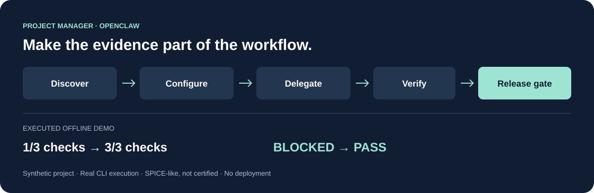

Ask before assuming.
Clarify scope, disciplines, infrastructure, ownership and delivery. Review the resolved setup before creating project resources.
OPEN-SOURCE ENGINEERING PROJECT CONTROL
Give your OpenClaw agent a consistent way to configure projects, coordinate specialists and check whether a release is ready.
Linux · Python 3.10+ · Git · No Python dependencies

Clarify scope, disciplines, infrastructure, ownership and delivery. Review the resolved setup before creating project resources.
Prepare specific assignments, inspect the runtime's capabilities and review returned work against acceptance evidence.
Link exact requirement revisions, test evidence, changes, frozen baselines, risks and milestones to the release decision.
ONE SELF-CONTAINED SKILL
Run the installer from your OpenClaw workspace and review the destination. Node.js 22.20+ is needed for this installer; a verified ZIP is also available.
INSTALL WITH THE SKILLS CLI
npx skills@1.6.0 add \
aminekhettat/engineering-project-manager \
--skill project-manager -a openclaw --copyThis independent tool supports disciplined engineering workflows. It is not a SPICE or Automotive SPICE certification, conformity assessment or standards-body endorsement. Passing its checks does not establish compliance, safety or a capability level.
Read the process scope and limitations →